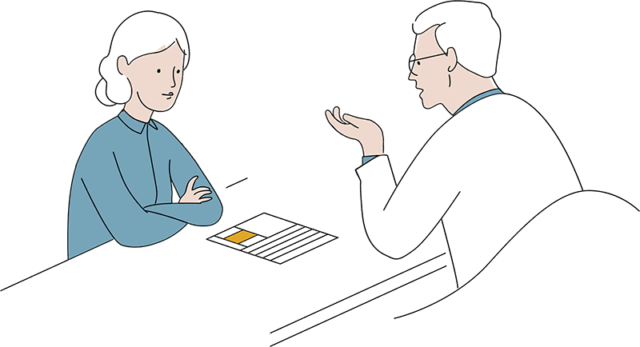

MÓDULO 2 : ENFERMEDAD INVASIVA LOCALIZADA / LOCALMENTE AVANZADA
CASO CLÍNICO 6
2
El oncólogo recibe el resultado de las pruebas de extensión.
En la RM se objetiva una masa en CSE de 2.5 x 2 cm, sospechosa así como adenopatías ipsilaterales sospechosas. No datos de diseminación a distancia en el TC y GGO, ecocardio normal.
AP: caricnoma infiltrante ductal usual no específico G3, RE 0%, RP 0%, Ki67 80% y HER2-negativo (cociente HER2/CEP17 1.1).
Se le propone a la paciente neoadyuvancia con AC x 4 seguido de Paclitaxel x 12.
3
La paciente acude a consulta tras cirugía (tumorectomía + linfadenectomía axilar derecha) a recoger el informe AP.
AP: carcinoma mamario residual ductal infiltrante G3, RE 0%, RP 0%, Ki67 40%, HER2-negativo. ypT1b (0,8 cm) ypN1a (1/12 ganglios afectos).
2

La paciente acude a consulta tras cirugía (tumorectomía + linfadenectomía axilar derecha) a recoger el informe AP.
El informe de AP: carcinoma mamario residual ductal infiltrante G3, RE 0%, RP 0%, Ki67 40%, HER2-negativo. ypT1b (0,8 cm) ypN1a (1/12 ganglios afectos).